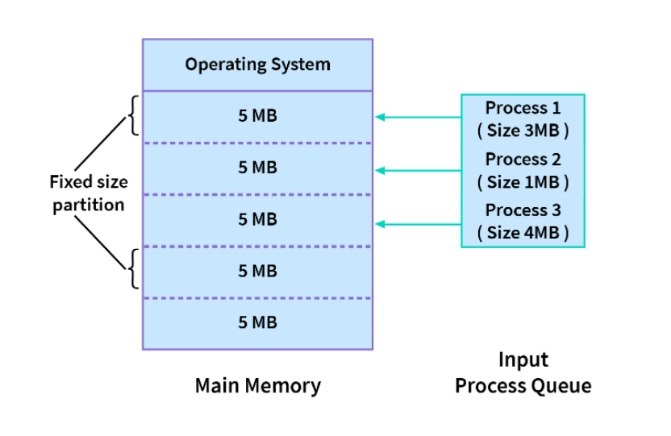
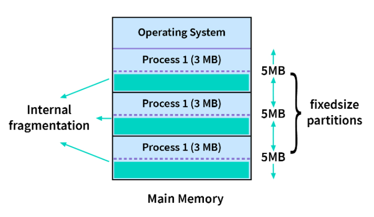

In this type of contiguous memory allocation technique, each process is allotted a fixed size continuous block in the main memory . That means there will be continuous blocks of fixed size into which the complete memory will be divided, and each time a process comes in, it will be allotted one of the free blocks. Because irrespective of the size of the process, each is allotted a block of the same size memory space.

In the diagram above, we have 3 processes in the input queue that have to be allotted space in the memory. As we are following the fixed size partition technique, the memory has fixed-sized blocks. The first process, which is of size 3MB is also allotted a 5MB block, and the second process, which is of size 1MB, is also allotted a 5MB block, and the 4MB process is also allotted a 5MB block. So, the process size doesn't matter. Each is allotted the same fixed-size memory block.
NOTE: The number of processes that can stay in the memory at once is called the degree of multiprogramming. Hence, the degree of multiprogramming of the system is decided by the number of blocks created in the memory, i.e if number of partitons is n then degree of multi-programming cannot be greater than n.
Advantage of multiple fixed partition system
- Because all of the blocks are the same size, this scheme is simple to implement. All we have to do now is divide the memory into fixed blocks and assign processes to them.
- It is easy to keep track of how many blocks of memory are left, which in turn decides how many more processes can be given space in the memory.
- As at a time multiple processes can be kept in the memory, this scheme can be implemented in a system that needs multiprogramming.
Disadvantages of multiple fixed partition system
- As the size of the blocks is fixed, we will not be able to allot space to a process that has a greater size than the block.
- The size of the blocks decides the degree of multiprogramming, and only that many processes can remain in the memory at once as the number of blocks.
- If the size of the block is greater than the size of the process, we have no other choice but to assign the process to this block, but this will lead to much empty space left behind in the block. This empty space could've been used to accommodate a different process. This is called internal fragmentation. Hence, this technique may lead to space wastage.
